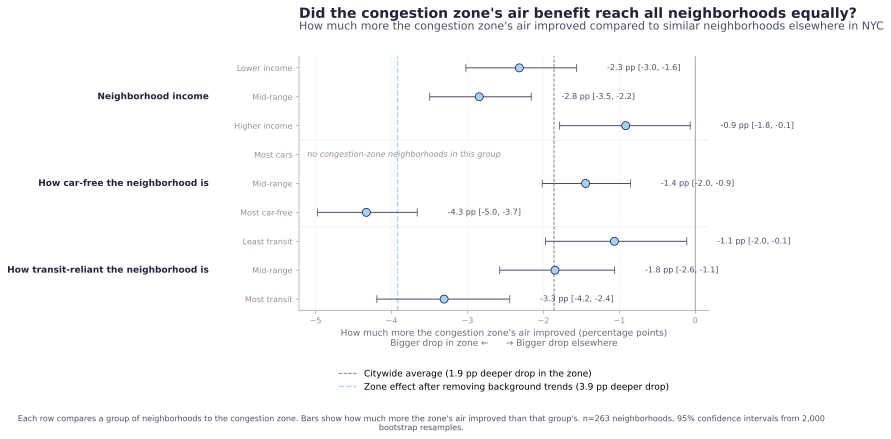
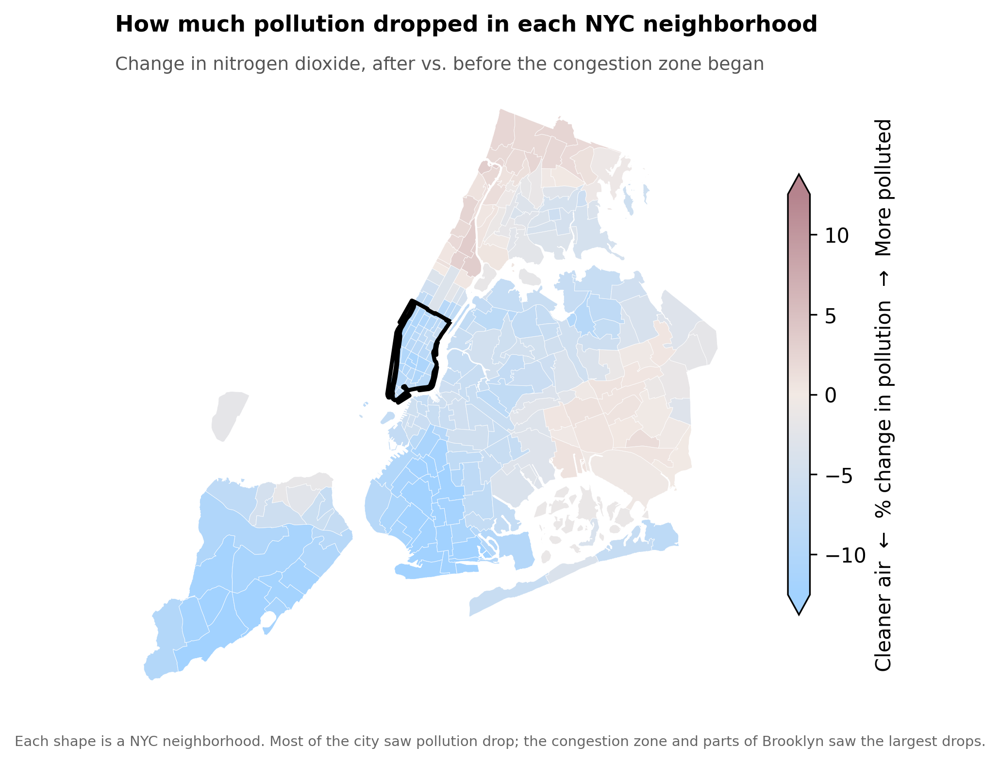

What changed in NYC's air after congestion pricing began?
Sixteen months of satellite nitrogen dioxide measurements suggest pollution declined more over Manhattan's congestion zone than elsewhere in New York City. The effect was measurable but modest, and unevenly distributed across neighborhoods.
Pollution over the congestion zone declined about 1.9 percentage points more than the citywide average.
TROPOMI satellite NO₂ measurements, season-matched across 16 months before and after January 2025. Adjustment uses a placebo comparison (2024 vs. 2023) to estimate background atmospheric variation.
Before, after, and change.
The left panels show average NO₂ concentrations before and after congestion pricing began. The difference map on the right isolates where pollution changed most strongly. The strongest reductions cluster around lower Manhattan and nearby dense corridors, rather than appearing evenly across the city.

Where pollution declined most.
Blue areas indicate NO₂ reductions; red areas indicate increases. The magnitude of change is modest, but the reductions form a coherent spatial pattern centered around the congestion zone.

What change looks like without the policy.
This placebo comparison shows NO₂ change during a year before congestion pricing existed (2024 vs. 2023). Unlike the real comparison, it does not produce a comparable reduction pattern over lower Manhattan.
Atmospheric pollution changes from year to year even without policy intervention. The placebo comparison helps separate broader background drift from changes more plausibly associated with the congestion zone itself.

What the signal suggests
Sixteen months after congestion pricing began, satellite measurements show nitrogen dioxide declined more over Manhattan's congestion zone than over most of the rest of NYC. The placebo comparison suggests this pattern exceeds ordinary year-to-year atmospheric variation.
NO₂ is closely associated with combustion sources, especially vehicle traffic. It is emitted by gasoline engines, diesel trucks, buses, and other fuel-burning systems, and contributes to respiratory illness, ozone formation, and fine particulate pollution.
The findings do not suggest a dramatic transformation in NYC's air quality. The observed changes are modest in magnitude. They are spatially coherent, statistically distinguishable from the placebo comparison, and concentrated near the congestion zone itself.
Did all neighborhoods benefit equally?
The pattern does not map cleanly onto neighborhood wealth.

The congestion zone improved most relative to higher-income, less transit-oriented neighborhoods elsewhere in the city. Lower-income, car-free, transit-dependent neighborhoods often experienced pollution declines similar to the zone itself, producing smaller relative gaps.
This does not suggest the benefits were regressive. Many lower-income transit-reliant neighborhoods saw measurable improvement. But the gains were uneven, and some neighborhoods bordering major truck corridors appear to have benefited less than the Manhattan core.

A note on the South Bronx
While this analysis was being completed, Columbia and South Bronx Unite released ground-monitor findings showing PM2.5 increased at 17 of 19 South Bronx monitoring sites during the congestion zone's first year, especially near major expressways.
Both findings may be true simultaneously.
This project measures NO₂ using a satellite instrument with a native footprint of roughly 5×3 km. The South Bronx study measures PM2.5 using ground-level monitors capable of detecting highly localized roadside changes. That distinction matters. A regional satellite signal showing cleaner air over lower Manhattan does not rule out hyperlocal pollution increases along truck diversion corridors.
The fairest interpretation is that congestion pricing's environmental effects were measurable but uneven, and that some communities already burdened by traffic pollution may have absorbed costs this analysis cannot fully resolve.
Things this analysis cannot see
- TROPOMI's native satellite footprint is roughly 5×3 km, making broad regional patterns more reliable than block-level neighborhood interpretation.
- This project measures NO₂ only. It does not directly measure PM2.5, ozone, indoor exposure, or cumulative health outcomes.
- Sixteen months is enough to detect a signal, but not enough to determine long-term trajectory.
- High-resolution FHV and rideshare trip records were unavailable at the spatial scale needed to evaluate Uber/Lyft substitution effects.
- Some transportation findings in later chapters partially reflect simultaneous MTA service changes rather than pure congestion-pricing effects alone.
These limitations do not invalidate the findings. They define the scale and scope of what this analysis can responsibly claim.